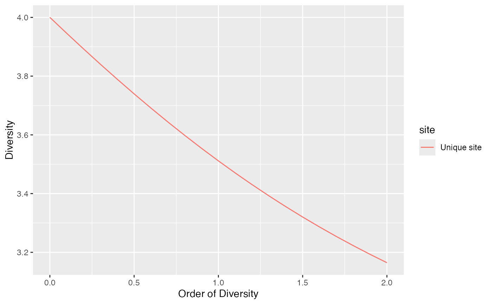

Plot objects of class "profile" produced by profile_hill and other profile functions.
Usage
# S3 method for class 'profile'
autoplot(
object,
...,
main = NULL,
xlab = "Order of Diversity",
ylab = "Diversity",
shade_color = "grey75",
alpha = 0.3,
lty = 1,
lwd = 0.5
)Arguments
- object
An object of class "profile".
- ...
Unused.
- main
The main title of the plot.
- xlab
The label of the x-axis.
- ylab
The label of the y-axis.
- shade_color
The color of the shaded confidence envelopes.
- alpha
The opacity of the confidence envelopes, between 0 (transparent) and 1 (opaque).
- lty
The line type of the curves.
- lwd
The line width of the curves.
Value
A ggplot2::ggplot object.
Examples
# Diversity profile curve
autoplot(profile_hill(mock_3sp_abd))
